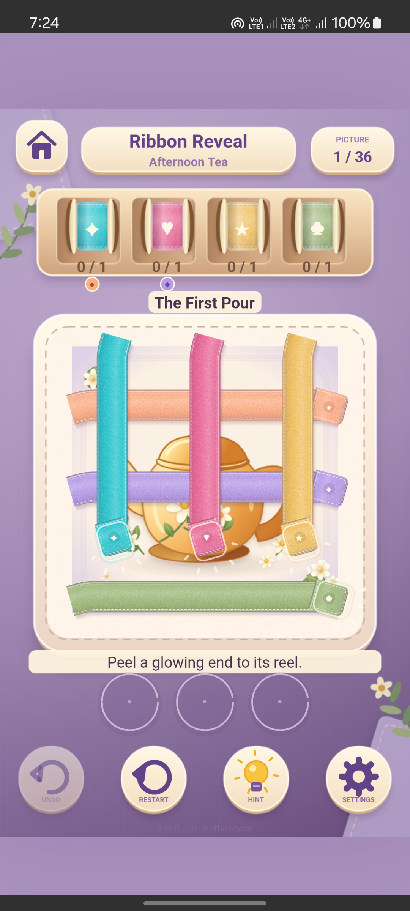
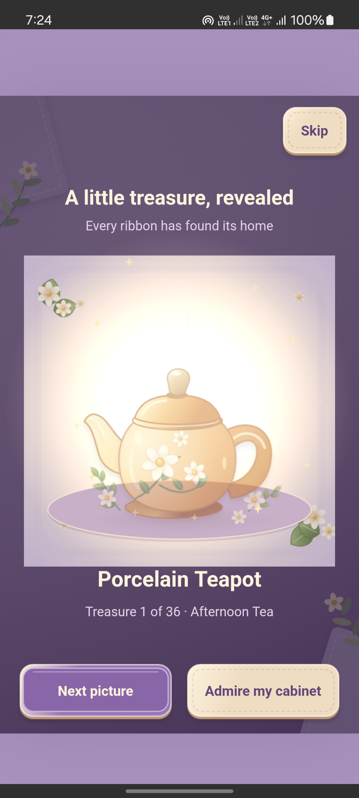
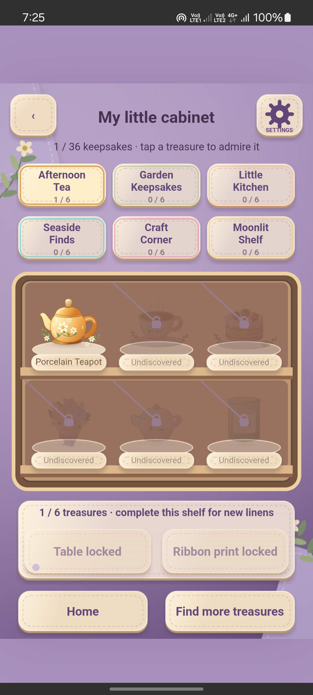
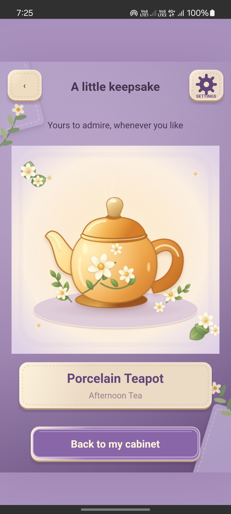

Ribbon Reveal
A cabinet of little wonders.
Peel colorful ribbons, uncover cozy treasures and build a cabinet of keepsakes. 36 pictures. Six little collections. A soft pull and a little reveal.
Android internal testing. A public Play download is not available from this page.
Unwrap something lovely
Tap a glowing exposed end, match its color to a reel and plan around three holding bays. Complete pictures to earn treasures, then admire them in your cabinet.
Explore Afternoon Tea, Garden Keepsakes, Little Kitchen, Seaside Finds, Craft Corner and Moonlit Shelf. Completing collections unlocks matching table colors and ribbon patterns.
Play offline with local progress saving, undo, restart and hints. Enjoy original music and sound effects, with independent controls and reduced motion. Optional rewarded help and occasional ads between completed pictures need internet; free hints, undo and offline play remain available. No accounts or in-app purchases. Intended audience: ages 13 and up.
Inside the game
Actual Android debug screenshots: the first puzzle, earned teapot reveal, cabinet and inspection.



